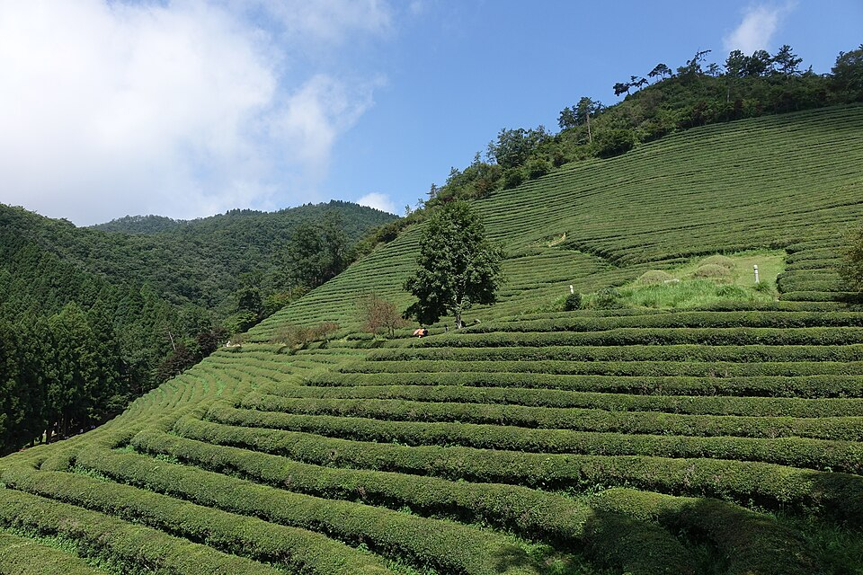

보성 검정고시 — 자녀가 검정고시를 택했을 때 부모가 할 일

자녀분이 학교를 그만두겠다고 했을 때, 부모님 입장에서는 당장 무슨 말을 해야 할지 막막하실 겁니다. 상담 전화를 주시는 분들 중에도 아이보다 부모님이 먼저 연락 주시는 경우가 많습니다. 보성 검정고시를 자녀분이 택했을 때 부모님이 하실 수 있는 일을 정리했습니다.
'왜 그만두려 하는지'를 먼저 분리해 주세요
학교를 떠나는 이유는 저마다 다릅니다. 사람 관계가 힘든 경우, 수업 속도가 안 맞는 경우, 하고 싶은 일이 따로 생긴 경우가 섞여 있습니다. 이유에 따라 그다음에 필요한 것이 완전히 달라집니다.
그런데 이 단계에서 부모님이 가장 흔히 하시는 실수가, 이유를 다 듣기 전에 설득부터 시작하는 것입니다. 설득이 먼저 오면 아이는 이유를 말하지 않게 되고, 그러면 정작 도와줄 지점을 못 찾습니다. 판단을 잠시 미루고 듣는 시간이 길수록 그다음이 쉬워집니다.
공부를 대신 관리하려 하지 않는 게 좋습니다
검정고시는 학교처럼 시간표가 주어지지 않습니다. 그래서 부모님이 계획표를 짜 주고 매일 확인하는 쪽으로 가기 쉽습니다. 당장은 진도가 나가는 것처럼 보이지만, 이 방식은 대개 몇 주 안에 다툼으로 끝납니다. 관리하는 사람과 감정을 나누는 사람을 같은 사람이 겸하기는 어렵습니다.
계획과 확인은 바깥에 맡기고, 부모님은 생활 쪽을 맡으시는 편이 오래갑니다. 일어나는 시간, 식사, 집 안에서 공부할 수 있는 자리 같은 것들입니다. 작아 보여도 혼자 준비하는 아이에게는 이쪽이 더 크게 작용합니다.
진로 이야기는 합격 뒤로 미루셔도 됩니다
"그래서 앞으로 뭘 할 건데"라는 질문을 지금 꺼내면 아이가 더 닫힙니다. 아직 답이 없는 게 자연스러운 시점이기 때문입니다. 검정고시 합격 자체를 먼저 끝내 놓는 것이 순서상 맞습니다.
고졸 검정고시에 합격하면 고등학교 졸업과 같은 학력으로 인정되어 대학 입시에 응시할 수 있고, 각종 자격증 시험에도 지원할 수 있습니다. 즉 선택지를 닫는 길이 아니라 결정을 뒤로 미룰 수 있게 해 주는 길입니다. 이 점을 아이에게도, 부모님 스스로에게도 확인해 두시면 조급함이 줄어듭니다.
합격 기준을 알고 나면 불안이 줄어듭니다
검정고시는 전 과목 평균 60점이면 합격입니다. 등수로 떨어뜨리는 시험이 아니라 기준을 넘으면 되는 시험이라, 학교 성적이 좋지 않았더라도 준비 기간 동안 올리면 됩니다. 또 일정 점수 이상을 받은 과목은 다음 회차에 다시 보지 않아도 되는 제도가 있어, 한 번에 전 과목을 다 붙어야 한다는 부담도 덜 수 있습니다.
응시 자격과 과목, 면제 기준은 시·도 교육청 공고에 따라 달라질 수 있으니 접수 전에 최신 공고로 확인해 주세요.
보성에서 이렇게 함께합니다
저희는 1:1 맞춤 과외라 계획을 세우고 매주 확인하는 역할을 선생님이 맡습니다. 그래서 집에서는 공부 이야기로 부딪힐 일이 줄어듭니다. 진행 상황은 부모님께 따로 전해 드리니 궁금해서 아이에게 묻지 않으셔도 됩니다. 보성읍과 벌교읍·조성면·회천면 등 인근 지역은 방문 수업이 가능하고, 이동이 어려우시면 화상(줌) 수업으로 집에서 그대로 진행합니다.
관련 검색어: 보성검정고시 · 보성검정고시과외 · 보성고졸검정고시 · 보성중졸검정고시 · 전남보성검정고시과외